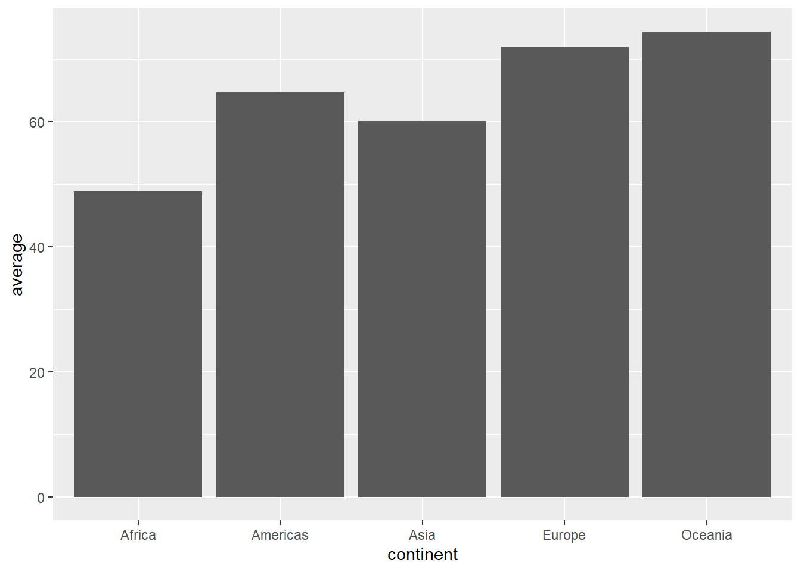
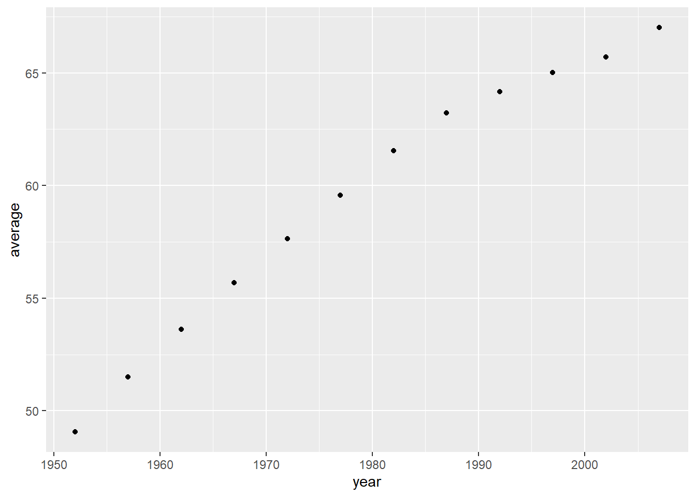

Chapter 5 dplyr(): The Main Verbs
filter(): Extract rowsselect(): Extract columnsarrange(): Order rowsmutate(): Create new columns (= variables)summarise(): Compute summary statistics
The syntax for all five verbs is similar. The first argument is the data frame, followed by the action to be performed using the variable name.
5.1 Filter
Let us observe the state of the world in 1952 and the contrast and compare with that in 2007.
(data_1952 <- data_gapminder %>%
dplyr::filter(year == 1952) #extract the rows for year 1952
) #note == as opposed to =## # A tibble: 142 x 6
## country continent year lifeExp pop gdpPercap
## <fct> <fct> <int> <dbl> <int> <dbl>
## 1 Afghanistan Asia 1952 28.8 8425333 779.
## 2 Albania Europe 1952 55.2 1282697 1601.
## 3 Algeria Africa 1952 43.1 9279525 2449.
## 4 Angola Africa 1952 30.0 4232095 3521.
## 5 Argentina Americas 1952 62.5 17876956 5911.
## 6 Australia Oceania 1952 69.1 8691212 10040.
## 7 Austria Europe 1952 66.8 6927772 6137.
## 8 Bahrain Asia 1952 50.9 120447 9867.
## 9 Bangladesh Asia 1952 37.5 46886859 684.
## 10 Belgium Europe 1952 68 8730405 8343.
## # ... with 132 more rows(data_2007 <- data_gapminder %>%
dplyr::filter(year == 2007) #extract the rows for year 2007
)## # A tibble: 142 x 6
## country continent year lifeExp pop gdpPercap
## <fct> <fct> <int> <dbl> <int> <dbl>
## 1 Afghanistan Asia 2007 43.8 31889923 975.
## 2 Albania Europe 2007 76.4 3600523 5937.
## 3 Algeria Africa 2007 72.3 33333216 6223.
## 4 Angola Africa 2007 42.7 12420476 4797.
## 5 Argentina Americas 2007 75.3 40301927 12779.
## 6 Australia Oceania 2007 81.2 20434176 34435.
## 7 Austria Europe 2007 79.8 8199783 36126.
## 8 Bahrain Asia 2007 75.6 708573 29796.
## 9 Bangladesh Asia 2007 64.1 150448339 1391.
## 10 Belgium Europe 2007 79.4 10392226 33693.
## # ... with 132 more rows5.2 Select
Let us also focus on two variables—GDP/capita and life expectancy. We extract both for years 1952 and 2007.
(data_1952_gdppc <- data_1952 %>%
dplyr::select(country, year, gdpPercap)
)## # A tibble: 142 x 3
## country year gdpPercap
## <fct> <int> <dbl>
## 1 Afghanistan 1952 779.
## 2 Albania 1952 1601.
## 3 Algeria 1952 2449.
## 4 Angola 1952 3521.
## 5 Argentina 1952 5911.
## 6 Australia 1952 10040.
## 7 Austria 1952 6137.
## 8 Bahrain 1952 9867.
## 9 Bangladesh 1952 684.
## 10 Belgium 1952 8343.
## # ... with 132 more rows(data_2007_gdppc <- data_2007 %>%
dplyr::select(country, year, gdpPercap)
)## # A tibble: 142 x 3
## country year gdpPercap
## <fct> <int> <dbl>
## 1 Afghanistan 2007 975.
## 2 Albania 2007 5937.
## 3 Algeria 2007 6223.
## 4 Angola 2007 4797.
## 5 Argentina 2007 12779.
## 6 Australia 2007 34435.
## 7 Austria 2007 36126.
## 8 Bahrain 2007 29796.
## 9 Bangladesh 2007 1391.
## 10 Belgium 2007 33693.
## # ... with 132 more rows(data_1952_life_exp <- data_1952 %>%
dplyr::select(country, year, lifeExp)
)## # A tibble: 142 x 3
## country year lifeExp
## <fct> <int> <dbl>
## 1 Afghanistan 1952 28.8
## 2 Albania 1952 55.2
## 3 Algeria 1952 43.1
## 4 Angola 1952 30.0
## 5 Argentina 1952 62.5
## 6 Australia 1952 69.1
## 7 Austria 1952 66.8
## 8 Bahrain 1952 50.9
## 9 Bangladesh 1952 37.5
## 10 Belgium 1952 68
## # ... with 132 more rows(data_2007_life_exp <- data_2007 %>%
dplyr::select(country, year, lifeExp)
)## # A tibble: 142 x 3
## country year lifeExp
## <fct> <int> <dbl>
## 1 Afghanistan 2007 43.8
## 2 Albania 2007 76.4
## 3 Algeria 2007 72.3
## 4 Angola 2007 42.7
## 5 Argentina 2007 75.3
## 6 Australia 2007 81.2
## 7 Austria 2007 79.8
## 8 Bahrain 2007 75.6
## 9 Bangladesh 2007 64.1
## 10 Belgium 2007 79.4
## # ... with 132 more rows# = dplyr::select(-c(continent, pop, gdpPercap))dplyr::rename() is a wrapper function for select() which renames the variable in consideration and keeps all other variables intact.
5.3 Arrange
Usage of arrange() orders (from first to last) entries on the basis of a variable.
5.3.1 Question: Is the set of richest countries the same in 1952 and 2007?
(data_1952_rich <- data_1952_gdppc %>%
dplyr::arrange(desc(gdpPercap)) #note the use of desc()
)## # A tibble: 142 x 3
## country year gdpPercap
## <fct> <int> <dbl>
## 1 Kuwait 1952 108382.
## 2 Switzerland 1952 14734.
## 3 United States 1952 13990.
## 4 Canada 1952 11367.
## 5 New Zealand 1952 10557.
## 6 Norway 1952 10095.
## 7 Australia 1952 10040.
## 8 United Kingdom 1952 9980.
## 9 Bahrain 1952 9867.
## 10 Denmark 1952 9692.
## # ... with 132 more rows(data_2007_rich <- data_2007_gdppc %>%
dplyr::arrange(desc(gdpPercap)) #note the use of desc()
)## # A tibble: 142 x 3
## country year gdpPercap
## <fct> <int> <dbl>
## 1 Norway 2007 49357.
## 2 Kuwait 2007 47307.
## 3 Singapore 2007 47143.
## 4 United States 2007 42952.
## 5 Ireland 2007 40676.
## 6 Hong Kong, China 2007 39725.
## 7 Switzerland 2007 37506.
## 8 Netherlands 2007 36798.
## 9 Canada 2007 36319.
## 10 Iceland 2007 36181.
## # ... with 132 more rows5.3.2 Which countries display the highest life expectancy pre-2000?
(data_life_pre00 <- data_gapminder %>%
dplyr::select(country, year, lifeExp) %>%
dplyr::filter(year <= 2000) %>%
dplyr::arrange(desc(lifeExp))
)## # A tibble: 1,420 x 3
## country year lifeExp
## <fct> <int> <dbl>
## 1 Japan 1997 80.7
## 2 Hong Kong, China 1997 80
## 3 Sweden 1997 79.4
## 4 Switzerland 1997 79.4
## 5 Japan 1992 79.4
## 6 Iceland 1997 79.0
## 7 Australia 1997 78.8
## 8 Italy 1997 78.8
## 9 Iceland 1992 78.8
## 10 Spain 1997 78.8
## # ... with 1,410 more rows5.3.3 Post-2000?
(data_life_post00 <- data_gapminder %>%
dplyr::select(country, year, lifeExp) %>%
dplyr::filter(year > 2000) %>%
dplyr::arrange(desc(lifeExp))
)## # A tibble: 284 x 3
## country year lifeExp
## <fct> <int> <dbl>
## 1 Japan 2007 82.6
## 2 Hong Kong, China 2007 82.2
## 3 Japan 2002 82
## 4 Iceland 2007 81.8
## 5 Switzerland 2007 81.7
## 6 Hong Kong, China 2002 81.5
## 7 Australia 2007 81.2
## 8 Spain 2007 80.9
## 9 Sweden 2007 80.9
## 10 Israel 2007 80.7
## # ... with 274 more rows5.4 Mutate
Let’s define a new variable called “total GDP” which is the product of the GDP/capita and the total population. To compute it and include it in the list of variables we can use the verb dplyr::mutate().
(data_GDP_tot <- data_gapminder %>%
dplyr::mutate(GDP_total = pop*gdpPercap/10^9) #in USD billions
)## # A tibble: 1,704 x 7
## country continent year lifeExp pop gdpPercap GDP_total
## <fct> <fct> <int> <dbl> <int> <dbl> <dbl>
## 1 Afghanistan Asia 1952 28.8 8425333 779. 6.57
## 2 Afghanistan Asia 1957 30.3 9240934 821. 7.59
## 3 Afghanistan Asia 1962 32.0 10267083 853. 8.76
## 4 Afghanistan Asia 1967 34.0 11537966 836. 9.65
## 5 Afghanistan Asia 1972 36.1 13079460 740. 9.68
## 6 Afghanistan Asia 1977 38.4 14880372 786. 11.7
## 7 Afghanistan Asia 1982 39.9 12881816 978. 12.6
## 8 Afghanistan Asia 1987 40.8 13867957 852. 11.8
## 9 Afghanistan Asia 1992 41.7 16317921 649. 10.6
## 10 Afghanistan Asia 1997 41.8 22227415 635. 14.1
## # ... with 1,694 more rowsIn general, for mutate() to work well, the function must take a vector of values as input and return a vector with the same number of values as output. A short list of functions that can be used with mutate() are:
- Arithmetic operators:
+,-,*,/,^ - Logs:
log(),log2(),log10() - Cumulative aggregates:
cumsum(),cumprod(),cummin(),cummax(),cummean()etc.
and many more.
5.4.1 Question: Which countries have the highest total GDP in 1952 and 2007?
(data_GDP_tot %>%
dplyr::filter(year == 1952) %>%
dplyr::arrange(desc(GDP_total))
)## # A tibble: 142 x 7
## country continent year lifeExp pop gdpPercap GDP_total
## <fct> <fct> <int> <dbl> <int> <dbl> <dbl>
## 1 United States Americas 1952 68.4 157553000 13990. 2204.
## 2 United Kingdom Europe 1952 69.2 50430000 9980. 503.
## 3 Germany Europe 1952 67.5 69145952 7144. 494.
## 4 France Europe 1952 67.4 42459667 7030. 298.
## 5 Japan Asia 1952 63.0 86459025 3217. 278.
## 6 Italy Europe 1952 65.9 47666000 4931. 235.
## 7 China Asia 1952 44 556263527 400. 223.
## 8 India Asia 1952 37.4 372000000 547. 203.
## 9 Canada Americas 1952 68.8 14785584 11367. 168.
## 10 Brazil Americas 1952 50.9 56602560 2109. 119.
## # ... with 132 more rows(data_GDP_tot %>%
dplyr::filter(year == 2007) %>%
dplyr::arrange(desc(GDP_total))
)## # A tibble: 142 x 7
## country continent year lifeExp pop gdpPercap GDP_total
## <fct> <fct> <int> <dbl> <int> <dbl> <dbl>
## 1 United States Americas 2007 78.2 301139947 42952. 12934.
## 2 China Asia 2007 73.0 1318683096 4959. 6540.
## 3 Japan Asia 2007 82.6 127467972 31656. 4035.
## 4 India Asia 2007 64.7 1110396331 2452. 2723.
## 5 Germany Europe 2007 79.4 82400996 32170. 2651.
## 6 United Kingdom Europe 2007 79.4 60776238 33203. 2018.
## 7 France Europe 2007 80.7 61083916 30470. 1861.
## 8 Brazil Americas 2007 72.4 190010647 9066. 1723.
## 9 Italy Europe 2007 80.5 58147733 28570. 1661.
## 10 Mexico Americas 2007 76.2 108700891 11978. 1302.
## # ... with 132 more rows5.4.2 Question: Which are the five smallest economies in 2007 (by total GDP)?
(data_GDP_tot %>%
dplyr::filter(year == 2007) %>%
dplyr::arrange(GDP_total) %>%
dplyr::filter(rank(GDP_total) <= 5)
)## # A tibble: 5 x 7
## country continent year lifeExp pop gdpPercap GDP_total
## <fct> <fct> <int> <dbl> <int> <dbl> <dbl>
## 1 Sao Tome and Principe Africa 2007 65.5 199579 1598. 0.319
## 2 Comoros Africa 2007 65.2 710960 986. 0.701
## 3 Guinea-Bissau Africa 2007 46.4 1472041 579. 0.853
## 4 Djibouti Africa 2007 54.8 496374 2082. 1.03
## 5 Gambia Africa 2007 59.4 1688359 753. 1.275.5 Summarise
The function summarise() (or equivalently summarize()) can be used to compute summary statistics. Here is an example, where we summarize the variable life expectancy for the continent Europe.
(life_exp_summ_eur <- data_gapminder %>%
dplyr::filter(continent == "Europe") %>%
dplyr::summarise(average = mean(lifeExp),
med = median(lifeExp),
std = sd(lifeExp),
variance = var(lifeExp),
iqr = IQR(lifeExp)
)
)## # A tibble: 1 x 5
## average med std variance iqr
## <dbl> <dbl> <dbl> <dbl> <dbl>
## 1 71.9 72.2 5.43 29.5 5.885.6 Grouped Summaries
5.6.1 Question: What are continent-wise summary statistics?
(summ_life_exp <- data_gapminder %>%
dplyr::group_by(continent) %>%
dplyr::summarise(average = mean(lifeExp),
med = median(lifeExp),
std = sd(lifeExp),
variance = var(lifeExp),
iqr = IQR(lifeExp)
)
)## # A tibble: 5 x 6
## continent average med std variance iqr
## <fct> <dbl> <dbl> <dbl> <dbl> <dbl>
## 1 Africa 48.9 47.8 9.15 83.7 12.0
## 2 Americas 64.7 67.0 9.35 87.3 13.3
## 3 Asia 60.1 61.8 11.9 141. 18.1
## 4 Europe 71.9 72.2 5.43 29.5 5.88
## 5 Oceania 74.3 73.7 3.80 14.4 6.35ggplot(data = summ_life_exp,
aes(x = continent, y = average)) +
geom_bar(stat = "identity")
(summ_year_life_exp <- data_gapminder %>%
dplyr::group_by(year) %>%
dplyr::summarise(average = mean(lifeExp),
med = median(lifeExp),
std = sd(lifeExp),
variance = var(lifeExp),
iqr = IQR(lifeExp)
)
)## # A tibble: 12 x 6
## year average med std variance iqr
## <int> <dbl> <dbl> <dbl> <dbl> <dbl>
## 1 1952 49.1 45.1 12.2 149. 20.7
## 2 1957 51.5 48.4 12.2 150. 21.8
## 3 1962 53.6 50.9 12.1 146. 21.8
## 4 1967 55.7 53.8 11.7 137. 21.4
## 5 1972 57.6 56.5 11.4 130. 20.7
## 6 1977 59.6 59.7 11.2 126. 19.9
## 7 1982 61.5 62.4 10.8 116. 18.0
## 8 1987 63.2 65.8 10.6 111. 16.9
## 9 1992 64.2 67.7 11.2 126. 16.5
## 10 1997 65.0 69.4 11.6 134. 18.5
## 11 2002 65.7 70.8 12.3 151. 19.9
## 12 2007 67.0 71.9 12.1 146. 19.3ggplot(data = summ_year_life_exp,
aes(x = year, y = average)) +
geom_point()
One can also perform grouped mutates and grouped filters.